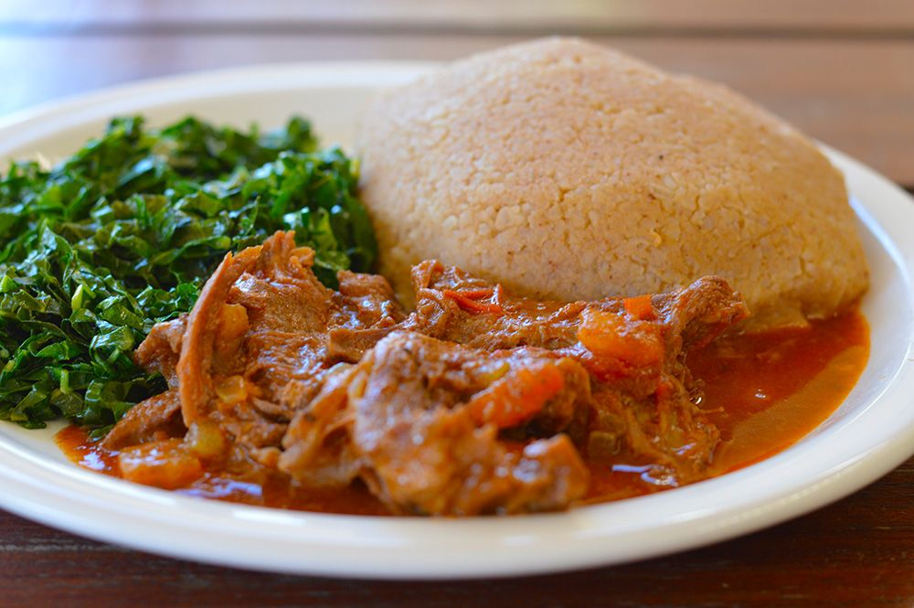

Muboora~Pumpkin Leaves

FOOD DESCRIPTION
Rice rine dovi ~ Peanut Butter Rice
Rice rine dovi (with peanut butter) is very nutritious. Its kinda...
Porridge rine dovi ~ Peanut Butter porridge

Porridge reHupfu (mealie-meal porridge) is something that just about every Zimbabawean has had as a child growing up and even as an adult. It has been passed down from generation to generation and it's most certainly a part of Zimabawean dishes. Its more like making sadza and cutting the process half way through. You can find a link to the recipe here: Porridge Recipe